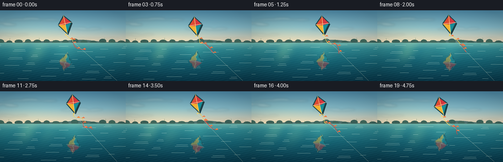
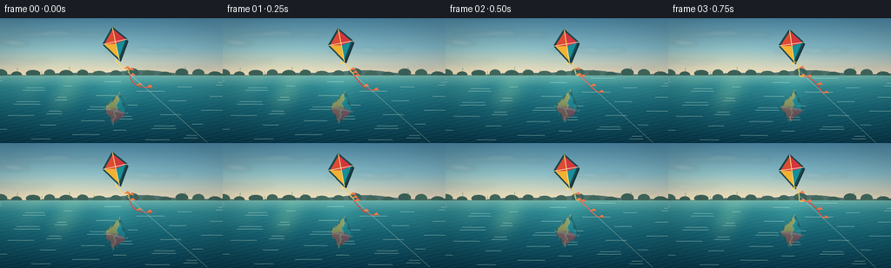
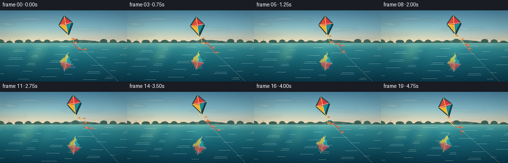
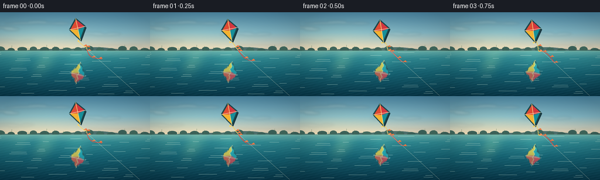
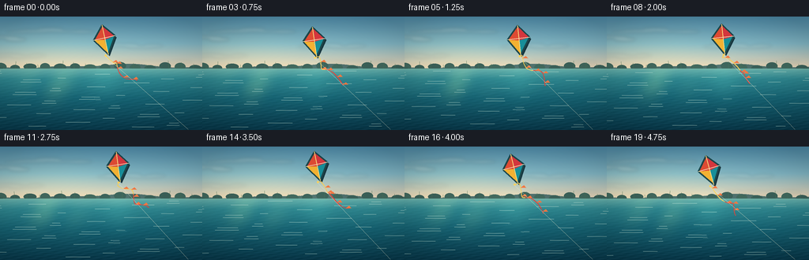
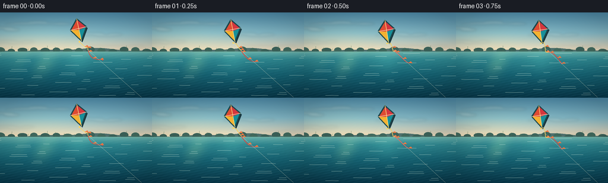

CODING AGENTS AS PIXEL WORLD MODELS
traex/DeepSeek-V4.1-Flash · phygen_057
点击播放 · 原生 RGB 像素
逐轮保存的候选
回放视频、检查图与代码变化。
每份候选均可单独播放。实际图片检查记录在下方工具轨迹中。
候选 01播放与检查图
点击播放 · 原生 RGB 像素

展开代码变化
--- 上一保存版本
+++ 本次保存版本
@@ -0,0 +1,320 @@
+from pathlib import Path
+import math
+
+import numpy as np
+from PIL import Image, ImageDraw, ImageFilter
+
+from artifact_io import save
+
+
+W, H, N, FPS = 256, 144, 20, 4.0
+SS = 3
+RNG = np.random.default_rng(57)
+
+
+def lerp(a, b, t):
+ return a + (b - a) * t
+
+
+def vertical_gradient(stops, height):
+ """Build a smooth RGB vertical gradient from (position, color) stops."""
+ ys = np.linspace(0.0, 1.0, height)
+ positions = np.array([s[0] for s in stops], dtype=np.float32)
+ colors = np.array([s[1] for s in stops], dtype=np.float32)
+ out = np.empty((height, 3), dtype=np.float32)
+ for c in range(3):
+ out[:, c] = np.interp(ys, positions, colors[:, c])
+ return out
+
+
+def smooth_noise_1d(n, octaves, seed):
+ rng = np.random.default_rng(seed)
+ x = np.arange(n, dtype=np.float32)
+ out = np.zeros(n, dtype=np.float32)
+ amplitude = 1.0
+ total = 0.0
+ for octave in range(octaves):
+ knots = max(3, 2 ** (octave + 2))
+ values = rng.normal(0.0, 1.0, knots).astype(np.float32)
+ pos = np.linspace(0.0, knots - 1.0, n)
+ lo = np.floor(pos).astype(int)
+ hi = np.minimum(lo + 1, knots - 1)
+ f = pos - lo
+ f = f * f * (3.0 - 2.0 * f)
+ out += amplitude * lerp(values[lo], values[hi], f)
+ total += amplitude
+ amplitude *= 0.52
+ return out / total
+
+
+def make_sky(t):
+ h = H * SS
+ sky = vertical_gradient(
+ [
+ (0.00, (76, 137, 168)),
+ (0.24, (130, 184, 200)),
+ (0.43, (220, 209, 184)),
+ (0.50, (244, 222, 185)),
+ (0.54, (162, 205, 199)),
+ (1.00, (30, 113, 126)),
+ ],
+ h,
+ )[:, None, :]
+ yy = np.arange(h, dtype=np.float32)[:, None]
+ xx = np.arange(W * SS, dtype=np.float32)[None, :]
+ # Warm reflected sunlight on the left, cool open sky toward the right.
+ glow = np.exp(-(((xx - 0.22 * W * SS) / (0.34 * W * SS)) ** 2 + ((yy - 0.34 * h) / (0.25 * h)) ** 2))
+ sky = sky + glow[:, :, None] * np.array([18, 15, 5], dtype=np.float32)
+
+ # Thin cloud bands, all moving very slowly.
+ cloud_layer = Image.new("RGBA", (W * SS, h), (0, 0, 0, 0))
+ cd = ImageDraw.Draw(cloud_layer)
+ cloud_specs = [
+ (26, 27, 96, 6, (235, 234, 220, 42), 0.9),
+ (98, 18, 118, 5, (246, 239, 217, 34), -0.6),
+ (174, 37, 92, 5, (228, 235, 225, 32), 0.7),
+ (14, 50, 74, 4, (240, 232, 210, 25), -0.4),
+ (184, 58, 104, 4, (225, 232, 218, 24), 0.5),
+ ]
+ for i, (cx, cy, length, thick, col, speed) in enumerate(cloud_specs):
+ drift = (t * speed * 1.7 + i * 13) % (W + length) - length * 0.4
+ x0 = int((cx + drift) * SS)
+ y0 = int(cy * SS)
+ for j in range(5):
+ offx = int((j - 2) * length * SS / 6)
+ offy = int(math.sin(j * 1.9 + i) * thick * SS * 0.35)
+ ww = int(length * SS * (0.28 + 0.12 * (j % 2)))
+ hh = int(thick * SS * (0.65 + 0.18 * (j % 3)))
+ cd.ellipse((x0 + offx - ww // 2, y0 + offy - hh // 2,
+ x0 + offx + ww // 2, y0 + offy + hh // 2), fill=col)
+ cloud_layer = cloud_layer.filter(ImageFilter.GaussianBlur(2.0 * SS))
+ sky_img = Image.fromarray(np.clip(sky, 0, 255).astype(np.uint8), "RGB").convert("RGBA")
+ sky_img.alpha_composite(cloud_layer)
+ return sky_img
+
+
+def draw_distant_land(draw, t):
+ # A quiet low horizon, intentionally subdued so the kite stays dominant.
+ land = Image.new("RGBA", (W * SS, H * SS), (0, 0, 0, 0))
+ d = ImageDraw.Draw(land)
+ ridge = []
+ for x in range(0, W * SS + 5, 5):
+ u = x / (W * SS)
+ y = 63.0 + 2.0 * math.sin(u * 7.4 + 0.3) + 1.1 * math.sin(u * 17.0)
+ ridge.append((x, y * SS))
+ d.polygon(ridge + [(W * SS, 70 * SS), (0, 70 * SS)], fill=(78, 112, 110, 255))
+
+ # Irregular tree line adds a hand-painted sense of scale.
+ for i in range(37):
+ x = (i * 19 + 5) % (W * SS + 20) - 5
+ base = 66.0 + 1.2 * math.sin(i * 2.1)
+ ht = 5.0 + 2.4 * (0.5 + 0.5 * math.sin(i * 4.7 + 1.1))
+ ww = 6.0 + 2.2 * (0.5 + 0.5 * math.cos(i * 3.3))
+ col = (47, 89, 83, 238) if i % 3 else (53, 97, 88, 238)
+ d.ellipse(((x - ww) * SS, (base - ht) * SS,
+ (x + ww) * SS, (base + 2.5) * SS), fill=col)
+
+ # Foreground bank and reeds frame the water without crowding it.
+ d.rectangle((0, 66 * SS, W * SS, 70 * SS), fill=(50, 91, 80, 255))
+ d.polygon([(0, 65 * SS), (35 * SS, 68 * SS), (0, 72 * SS)], fill=(38, 76, 67, 255))
+ d.polygon([(W * SS, 65 * SS), ((W - 34) * SS, 68 * SS),
+ (W * SS, 74 * SS)], fill=(42, 81, 70, 255))
+ for i in range(19):
+ x = i * 15 + 4
+ hh = 5 + (i * 7) % 9
+ sway = math.sin(t * 1.1 + i * 1.7) * 1.2
+ d.line((x * SS, 69 * SS, (x + sway) * SS, (69 - hh) * SS),
+ fill=(55, 105, 77, 230), width=max(1, SS // 2))
+ return land
+
+
+def make_water(t):
+ h = H * SS
+ water = vertical_gradient(
+ [
+ (0.46, (102, 176, 173)),
+ (0.55, (47, 135, 145)),
+ (0.72, (23, 100, 117)),
+ (1.00, (9, 59, 78)),
+ ],
+ h,
+ )[:, None, :]
+ xx = np.arange(W * SS, dtype=np.float32)[None, :]
+ yy = np.arange(h, dtype=np.float32)[:, None]
+ horizon = int(66 * SS)
+ # Broad reflected sky and sun columns.
+ band = np.clip((yy - horizon) / (h - horizon), 0, 1)
+ glint = 0.5 + 0.5 * np.cos((xx - 64 * SS) / (9 * SS) + yy * 0.018 + t * 1.1)
+ glint *= np.exp(-((xx - 64 * SS) / (32 * SS)) ** 2) * np.exp(-((band - 0.24) / 0.28) ** 2)
+ water = water + glint[:, :, None] * np.array([30, 24, 8], dtype=np.float32)
+
+ # Fine ripples use coherent sine fields and are baked into the static texture.
+ ripple = (
+ 0.55 * np.sin(xx * 0.105 + yy * 0.48 + t * 1.7)
+ + 0.30 * np.sin(xx * 0.043 - yy * 0.71 - t * 1.1)
+ + 0.15 * np.sin(xx * 0.19 + yy * 0.21 + t * 2.4)
+ )
+ depth_fade = np.clip((yy - horizon) / (h - horizon), 0, 1)
+ ripple_strength = 2.0 + 6.0 * depth_fade
+ water = water + ripple[:, :, None] * ripple_strength[:, :, None] * np.array([0.65, 0.85, 1.0])
+
+ # Horizontal ripple strokes suggest the smooth surface without looking choppy.
+ water_img = Image.fromarray(np.clip(water, 0, 255).astype(np.uint8), "RGB").convert("RGBA")
+ rd = ImageDraw.Draw(water_img, "RGBA")
+ for i in range(44):
+ y = 69 + ((i * 11 + int(t * 2.2)) % 72)
+ x = (i * 37 + 17) % (W + 50) - 25
+ length = 9 + (i * 13) % 25
+ alpha = 20 + (i * 5) % 20
+ rd.line((x * SS, y * SS, (x + length) * SS, y * SS),
+ fill=(196, 231, 218, alpha), width=1)
+ return water_img
+
+
+def kite_geometry(t):
+ phase = 2 * math.pi * t / 5.0
+ cx = 139.0 + 10.5 * math.sin(phase * 0.76 - 0.65) + 2.0 * math.sin(phase * 1.9)
+ cy = 28.5 + 3.3 * math.sin(phase * 1.12 + 0.35) + 1.0 * math.sin(phase * 2.7)
+ angle = math.radians(-9.0 + 5.0 * math.sin(phase * 0.83 - 0.3))
+ return cx, cy, angle
+
+
+def rotate(points, cx, cy, angle):
+ ca, sa = math.cos(angle), math.sin(angle)
+ out = []
+ for x, y in points:
+ dx, dy = x - cx, y - cy
+ out.append((cx + dx * ca - dy * sa, cy + dx * sa + dy * ca))
+ return out
+
+
+def draw_kite(canvas, t):
+ cx, cy, angle = kite_geometry(t)
+ scale = SS
+ top = (cx, cy - 19.0)
+ left = (cx - 14.0, cy - 2.0)
+ right = (cx + 14.0, cy - 3.0)
+ bottom = (cx + 1.0, cy + 19.0)
+ pts = rotate([top, left, bottom, right], cx, cy, angle)
+ pts_px = [(x * scale, y * scale) for x, y in pts]
+ d = ImageDraw.Draw(canvas, "RGBA")
+
+ # A soft, offset shadow gives the kite separation from the sky.
+ shadow_pts = [(x + 1.8 * SS, y + 2.2 * SS) for x, y in pts_px]
+ d.polygon(shadow_pts, fill=(24, 54, 64, 52))
+
+ # Four colored sail panels, with a pale seam between them.
+ c = (cx * SS, cy * SS)
+ panels = [
+ ((pts_px[0], pts_px[1], c), (228, 78, 54, 255)),
+ ((pts_px[1], pts_px[2], c), (246, 181, 52, 255)),
+ ((pts_px[2], pts_px[3], c), (25, 146, 158, 255)),
+ ((pts_px[3], pts_px[0], c), (219, 57, 65, 255)),
+ ]
+ for shape, color in panels:
+ d.polygon(shape, fill=color)
+
+ # Thin sail highlights and dark leading edge.
+ d.line((pts_px[0], pts_px[1], pts_px[2], pts_px[3], pts_px[0]),
+ fill=(30, 73, 78, 255), width=2 * SS)
+ d.line((pts_px[0], pts_px[2]), fill=(255, 223, 132, 205), width=max(1, SS))
+ d.line((pts_px[1], pts_px[3]), fill=(251, 238, 199, 180), width=max(1, SS))
+
+ # Small central bow and trailing ribbon.
+ bow_x, bow_y = (bottom[0] * SS, (bottom[1] + 1.0) * SS)
+ d.ellipse((bow_x - 1.3 * SS, bow_y - 1.3 * SS,
+ bow_x + 1.3 * SS, bow_y + 1.3 * SS), fill=(255, 211, 92, 255))
+
+ tail = [(bow_x, bow_y)]
+ length = 62.0
+ for i in range(1, 28):
+ q = i / 27.0
+ x = bow_x + (q * length * 0.58 + 4.0 * math.sin(q * 8.0 + t * 1.9)) * SS
+ y = bow_y + (q * length * 0.56 + 3.2 * math.sin(q * 11.0 - t * 2.1)) * SS
+ tail.append((x, y))
+ for i in range(len(tail) - 1):
+ col = (243, 205, 91, 220) if i < 13 else (220, 67, 61, 210)
+ d.line((tail[i], tail[i + 1]), fill=col, width=max(1, SS))
+ for i in range(4, 26, 5):
+ x, y = tail[i]
+ d.polygon([(x, y), (x + 4.0 * SS, y - 2.8 * SS), (x + 7.0 * SS, y + 0.4 * SS)],
+ fill=(241, 120, 67, 220))
+
+ # Kite string reaches toward the right bank and is visible against the sky.
+ anchor = ((W - 18) * SS, (H - 1) * SS)
+ d.line((bow_x, bow_y + 1 * SS, anchor[0], anchor[1]),
+ fill=(232, 234, 207, 105), width=max(1, SS // 2))
+ return pts, (cx, cy), angle
+
+
+def reflect_kite(frame, t, pts, center, angle):
+ # Mirror the kite into the pond, then perturb each row to form a water reflection.
+ src = np.asarray(frame)
+ out = src.copy()
+ cx, cy = center
+ horizon = 66.0
+ y0 = int(max(67, 2 * horizon - cy - 25))
+ y1 = int(min(H - 1, 2 * horizon - cy + 26))
+ # Reflection is compressed and softened, as on a calm pond.
+ mask = np.zeros((H, W), dtype=np.float32)
+ mask_img = Image.fromarray((mask * 255).astype(np.uint8))
+ d = ImageDraw.Draw(mask_img)
+ mirror_pts = [(x, 2 * horizon - y + 1.5) for x, y in pts]
+ d.polygon([(int(round(x)), int(round(y))) for x, y in mirror_pts], fill=255)
+ mask = np.asarray(mask_img, dtype=np.float32) / 255.0
+ yy, xx = np.mgrid[0:H, 0:W]
+ wobble = (1.2 * np.sin(yy * 0.65 + t * 4.0) + 0.55 * np.sin(yy * 1.7 - t * 2.3))
+ sx = np.clip(xx + wobble, 0, W - 1).astype(np.int32)
+ sy = np.clip(yy, 0, H - 1).astype(np.int32)
+ reflected = src[sy, sx].astype(np.float32)
+ reflected = np.roll(reflected, 1, axis=0)
+ alpha = mask * (0.31 + 0.08 * np.exp(-((yy - 76) / 18.0) ** 2))
+ out = out.astype(np.float32) * (1 - alpha[:, :, None]) + reflected * alpha[:, :, None]
+
+ # Broader blue-green reflection haze makes the water read as a mirror.
+ haze = np.exp(-((xx - cx) / 19.0) ** 2) * np.exp(-((yy - 82) / 23.0) ** 2)
+ out += haze[:, :, None] * np.array([8, 12, 9], dtype=np.float32)
+ return np.clip(out, 0, 255).astype(np.uint8)
+
+
+def render_frame(index):
+ t = index / FPS
+ sky = make_sky(t)
+ land = draw_distant_land(ImageDraw.Draw(Image.new("RGBA", (1, 1))), t)
+
+ water = make_water(t)
+ # Compose the horizon and water onto the sky.
+ scene = sky.copy()
+ scene.alpha_composite(land)
+ water_mask = Image.new("L", (W * SS, H * SS), 0)
+ wm = ImageDraw.Draw(water_mask)
+ wm.rectangle((0, 66 * SS, W * SS, H * SS), fill=255)
+ scene.paste(water, (0, 0), water_mask)
+
+ # Low bank highlights.
+ d = ImageDraw.Draw(scene, "RGBA")
+ d.line((0, 67 * SS, W * SS, 67 * SS), fill=(134, 180, 151, 105), width=1)
+
+ pts, center, angle = draw_kite(scene, t)
+ small = scene.convert("RGB").resize((W, H), Image.Resampling.LANCZOS)
+ frame = reflect_kite(np.asarray(small), t, pts, center, angle)
+
+ # Final color grading and a very subtle vignette.
+ arr = frame.astype(np.float32)
+ yy, xx = np.mgrid[0:H, 0:W]
+ vignette = np.clip(1.0 - 0.10 * (((xx - W / 2) / (W / 2)) ** 2 + ((yy - H / 2) / (H / 2)) ** 2), 0.84, 1.0)
+ arr *= vignette[:, :, None]
+ arr[:, :, 0] *= 1.02
+ arr[:, :, 1] *= 1.01
+ return np.clip(arr, 0, 255).astype(np.uint8)
+
+
+def main():
+ case_dir = Path(__file__).resolve().parent
+ frames = np.stack([render_frame(i) for i in range(N)])
+ save(frames, case_dir)
+ print(f"saved {frames.shape} to {case_dir}")
+
+
+if __name__ == "__main__":
+ main()
候选 02播放与检查图
点击播放 · 原生 RGB 像素


展开代码变化
--- 上一保存版本
+++ 本次保存版本
@@ -265,10 +265,11 @@
yy, xx = np.mgrid[0:H, 0:W]
wobble = (1.2 * np.sin(yy * 0.65 + t * 4.0) + 0.55 * np.sin(yy * 1.7 - t * 2.3))
sx = np.clip(xx + wobble, 0, W - 1).astype(np.int32)
- sy = np.clip(yy, 0, H - 1).astype(np.int32)
+ sy = np.clip(2 * horizon - yy + 1, 0, H - 1).astype(np.int32)
reflected = src[sy, sx].astype(np.float32)
- reflected = np.roll(reflected, 1, axis=0)
- alpha = mask * (0.31 + 0.08 * np.exp(-((yy - 76) / 18.0) ** 2))
+ # Slight vertical blur softens detail without erasing the colored sail.
+ reflected[1:-1] = (reflected[:-2] + 2 * reflected[1:-1] + reflected[2:]) / 4
+ alpha = mask * (0.38 + 0.12 * np.exp(-((yy - 84) / 22.0) ** 2))
out = out.astype(np.float32) * (1 - alpha[:, :, None]) + reflected * alpha[:, :, None]
# Broader blue-green reflection haze makes the water read as a mirror.
候选 03播放与检查图
点击播放 · 原生 RGB 像素

展开代码变化
--- 上一保存版本
+++ 本次保存版本
@@ -267,9 +267,10 @@
sx = np.clip(xx + wobble, 0, W - 1).astype(np.int32)
sy = np.clip(2 * horizon - yy + 1, 0, H - 1).astype(np.int32)
reflected = src[sy, sx].astype(np.float32)
+ reflected = np.clip(reflected * 1.16 + 4.0, 0, 255)
# Slight vertical blur softens detail without erasing the colored sail.
reflected[1:-1] = (reflected[:-2] + 2 * reflected[1:-1] + reflected[2:]) / 4
- alpha = mask * (0.38 + 0.12 * np.exp(-((yy - 84) / 22.0) ** 2))
+ alpha = mask * (0.61 + 0.12 * np.exp(-((yy - 84) / 22.0) ** 2))
out = out.astype(np.float32) * (1 - alpha[:, :, None]) + reflected * alpha[:, :, None]
# Broader blue-green reflection haze makes the water read as a mirror.
候选 04播放与检查图
点击播放 · 原生 RGB 像素


展开代码变化
--- 上一保存版本
+++ 本次保存版本
@@ -88,7 +88,7 @@
cd.ellipse((x0 + offx - ww // 2, y0 + offy - hh // 2,
x0 + offx + ww // 2, y0 + offy + hh // 2), fill=col)
cloud_layer = cloud_layer.filter(ImageFilter.GaussianBlur(2.0 * SS))
- sky_img = Image.fromarray(np.clip(sky, 0, 255).astype(np.uint8), "RGB").convert("RGBA")
+ sky_img = Image.fromarray(np.clip(sky, 0, 255).astype(np.uint8)).convert("RGBA")
sky_img.alpha_composite(cloud_layer)
return sky_img
@@ -159,7 +159,7 @@
water = water + ripple[:, :, None] * ripple_strength[:, :, None] * np.array([0.65, 0.85, 1.0])
# Horizontal ripple strokes suggest the smooth surface without looking choppy.
- water_img = Image.fromarray(np.clip(water, 0, 255).astype(np.uint8), "RGB").convert("RGBA")
+ water_img = Image.fromarray(np.clip(water, 0, 255).astype(np.uint8)).convert("RGBA")
rd = ImageDraw.Draw(water_img, "RGBA")
for i in range(44):
y = 69 + ((i * 11 + int(t * 2.2)) % 72)
可观测工具轨迹
实际执行的命令与返回图片。
命令 1exit 0
/bin/bash -c "pwd && rg --files -g 'prompt.txt' -g 'GENERATION_RULES.md' -g 'task_spec.json' -g '"'!**/.git/**'"'"
命令 2exit 0
/bin/bash -c 'ls -la'
命令 3exit 0
/bin/bash -c 'cat prompt.txt'
命令 4exit 0
/bin/bash -c 'cat GENERATION_RULES.md'
命令 5exit 0
/bin/bash -c 'cat task_spec.json'
命令 6exit 0
/bin/bash -c "sed -n '1,240p' artifact_io.py && printf '\\n--- player ---\\n' && sed -n '1,240p' player_template.html"
命令 7exit 0
/bin/bash -c "python3 - <<'PY' import importlib.util for m in ['numpy','PIL','scipy','cv2']: print(m, bool(importlib.util.find_spec(m))) PY"
命令 8exit 1
/bin/bash -c 'python3 generate.py'
命令 9exit 1
/bin/bash -c 'python3 generate.py'
命令 10exit 1
/bin/bash -c 'python3 generate.py'
命令 11exit 0
/bin/bash -c "rg -n '\\+=' generate.py"
命令 12exit 1
/bin/bash -c 'python3 generate.py'
命令 13exit 1
/bin/bash -c 'python3 generate.py'
命令 14exit 0
/bin/bash -c 'python3 generate.py'
命令 15exit 0
/bin/bash -c "python3 - <<'PY'
from pathlib import Path
import numpy as np
from PIL import Image
p=Path('.')
z=np.load(p/'pixels.npz')['pixels']
print('pixels', z.shape, z.dtype, int(z.min()), int(z.max()))
frames=np.stack([np.asarray(Image.open(p/'frames'/f'{i:02d}.png')) for i in range(20)])
print('frames', frames.shape, 'changes', [int(np.any(frames[i]"'!=frames[i-1])) for i in range(1,20)])
print('"'unique colors', len(np.unique(frames.reshape(-1,3),axis=0)))
for name in ['index.html','pixels.npz','inspection.png','transition_check.png','generate.py']:
q=p/name
print(name, q.stat().st_size)
PY"命令 16exit 0
/bin/bash -c 'python3 generate.py'
命令 17exit 0
/bin/bash -c 'python3 generate.py'
命令 18exit 0
/bin/bash -c "python3 - <<'PY' import importlib.util for m in ['playwright','selenium']: print(m, bool(importlib.util.find_spec(m))) PY"
命令 19exit 0
/bin/bash -c 'node --version 2>/dev/null || true; which chromium chromium-browser google-chrome 2>/dev/null || true'
命令 20exit 0
/bin/bash -c "python3 -m py_compile generate.py && python3 - <<'PY'
from pathlib import Path
import json
s=json.loads(Path('task_spec.json').read_text())
assert s == {'task_type':'t2v','width':256,'height':144,'frames':20,'fps':4.0,'audio':None,'benchmark':'phygenbench'}
print('spec valid')
PY"命令 21exit 0
/bin/bash -c 'python3 generate.py'
命令 22exit 1
/bin/bash -c "python3 - <<'PY'
from pathlib import Path
from playwright.sync_api import sync_playwright
p=Path('index.html').resolve()
with sync_playwright() as pw:
browser=pw.chromium.launch(headless=True)
page=browser.new_page(viewport={'width':900,'height':600})
errors=[]
page.on('pageerror', lambda e: errors.append(str(e)))
page.goto(p.as_uri())
page.wait_for_function('window.__pixelReady === true')
first=page.evaluate('document.getElementById(\"time\").textContent')
page.click('#play')
page.wait_for_timeout(700)
middle=page.evaluate('document.getElementById(\"time\").textContent')
page.click('#play')
page.screenshot(path='.tmp/player_check.png', full_page=True)
print('first:',first,'middle:',middle,'errors:',errors)
browser.close()
PY"命令 23exit 1
/bin/bash -c "TMPDIR=./.tmp python3 - <<'PY'
from pathlib import Path
from playwright.sync_api import sync_playwright
p=Path('index.html').resolve()
with sync_playwright() as pw:
browser=pw.chromium.launch(headless=True)
page=browser.new_page(viewport={'width':900,'height':600})
errors=[]
page.on('pageerror', lambda e: errors.append(str(e)))
page.goto(p.as_uri())
page.wait_for_function('window.__pixelReady === true')
first=page.evaluate('document.getElementById(\"time\").textContent')
page.click('#play')
page.wait_for_timeout(700)
middle=page.evaluate('document.getElementById(\"time\").textContent')
page.click('#play')
page.screenshot(path='.tmp/player_check.png', full_page=True)
print('first:',first,'middle:',middle,'errors:',errors)
browser.close()
PY"命令 24exit 1
/bin/bash -c "python3 - <<'PY'
from pathlib import Path
import numpy as np
from PIL import Image
p=Path('.')
frames=sorted((p/'frames').glob('*.png'))
assert len(frames)==20, len(frames)
arr=np.stack([np.asarray(Image.open(f)) for f in frames])
assert arr.shape==(20,144,256,3) and arr.dtype==np.uint8
packed=np.load(p/'pixels.npz')['pixels']
assert packed.shape==(144,256,20) and packed.dtype==np.uint32
decoded=np.stack([(packed[:,:,i]>>16)&255 for i in range(20)],axis=0)
assert np.array_equal(decoded, arr[:,:,:,0])
assert all(np.any(arr[i]"'!=arr[i-1]) for i in range(1,20))
assert (p/'"'index.html').is_file() and (p/'inspection.png').is_file()
assert not (p/'audio.wav').exists()
print('contract OK: 20 frames, 256x144, 4 fps, RGB; all consecutive frames differ; no audio')
PY
node --check <(sed -n \"s/.*<script>'use strict';\\(.*\\)<\\/script>.*/\\1/p\" index.html)"命令 25exit 0
/bin/bash -c "python3 - <<'PY'
from pathlib import Path
import re
s=Path('index.html').read_text()
script=re.search(r\"<script>(.*?)</script>\",s,re.S).group(1)
Path('.tmp/player.js').write_text(script)
PY
node --check .tmp/player.js"视觉工具实际返回图片 1

视觉工具实际返回图片 2

视觉工具实际返回图片 3

视觉工具实际返回图片 4

保存候选 4 份；完成命令 25 次；可验证图片返回 4 张。原始 API 响应与完整日志保留在本地。